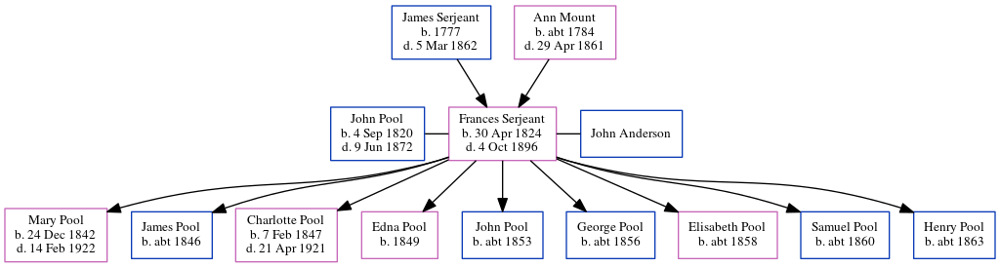

John Edward Pool 1820 - 1872
[ Home ] | [ Calendar ] | [ Surnames Index ] | [ Errors ] | [ Family History ]John Pool, the husband of Frances Elizabeth Serjeant (the first cousin five-times-removed on the mother's side of Nigel Horne), was born in England on 4 Sept 18201 and married Frances (with whom he had 9 children: Mary Ann, James E, Charlotte Maria, Edna J, John W, George H, Elisabeth M, Samuel R and Henry H) in Allen, Indiana, USA on 5 Feb 1842.
During his life, he was living in Clay, Indiana, USA on 1 Jun 18602; and in Lewis, Indiana on 1 Jun 18701.
He died on 9 Jun 1872 in Clay.
Children
- Mary Ann was born on 24 Dec 1842
- James E was born c. 1846
- Charlotte Maria was born on 7 Feb 1847
- Edna J was born in 1849
- John W was born c. 1853
- George H was born c. 1856
- Elisabeth M was born c. 1858
- Samuel R was born c. 1860
- Henry H was born c. 1863
Citations
- US Census 1870 - Findmypast (was age 49 and the head of the household)
- US Census 1860 - Findmypast (was age 39 and the head of the household)
Media
Indiana, Marriages, 1780-1992 Transcription - R_328038277
1870 US Census Transcription - USC-1870-004263289-00218-030
Us Census 1870 - USC/1870/004263289/00218/029
Family Tree
Map
Generated by ged2site. Last updated on Jul 3, 2024
Known Issues
Death date (9 Jun 1872) has no citations
Marriage date (5 Feb 1842) has no citations